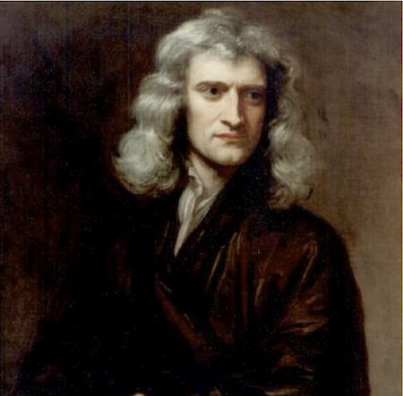
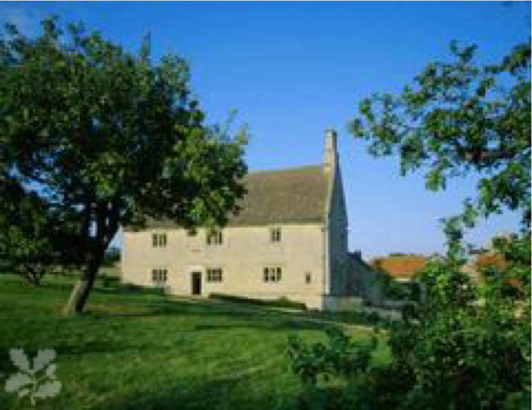
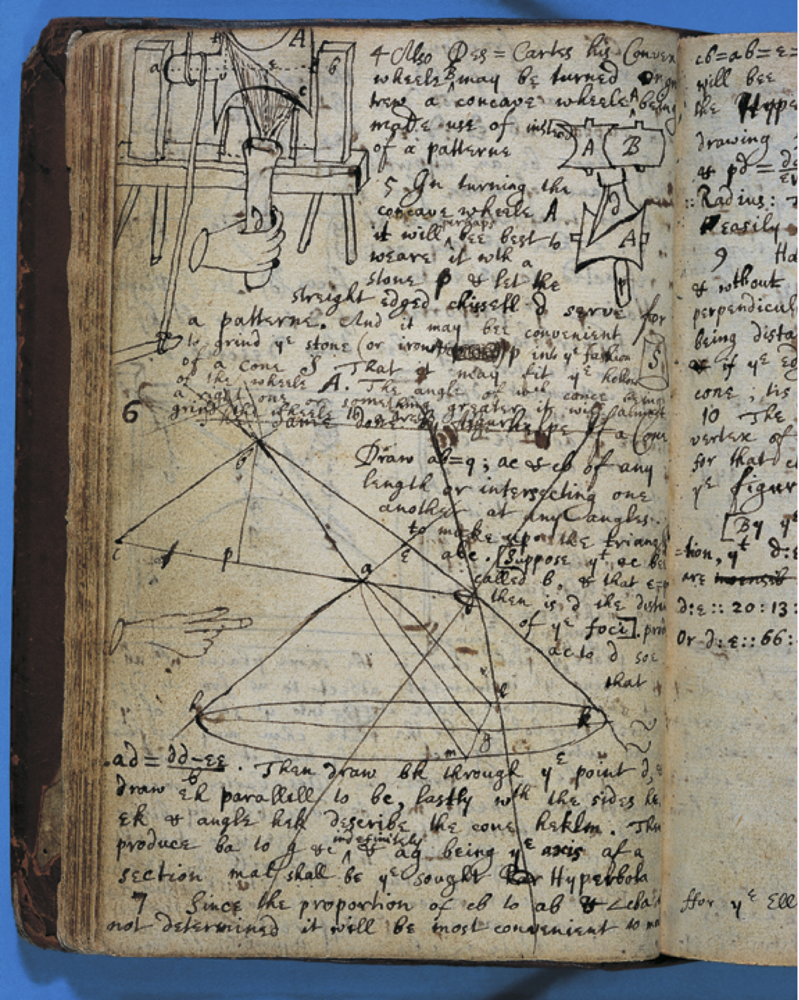
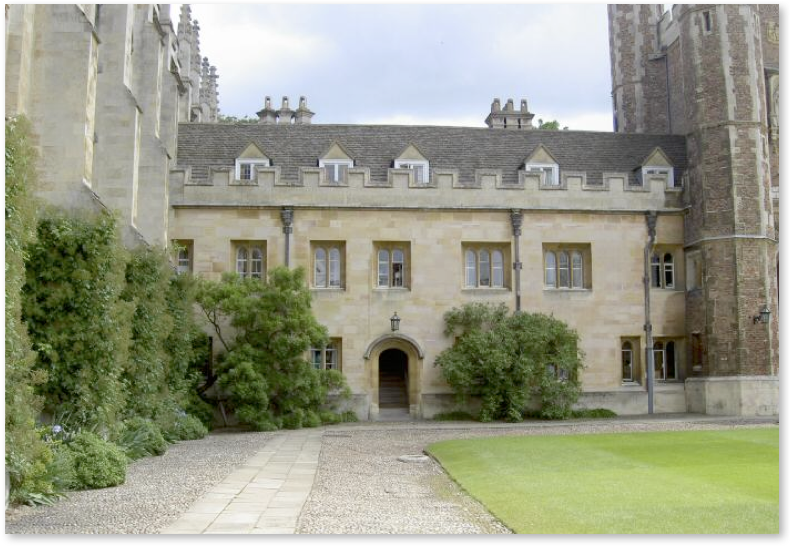
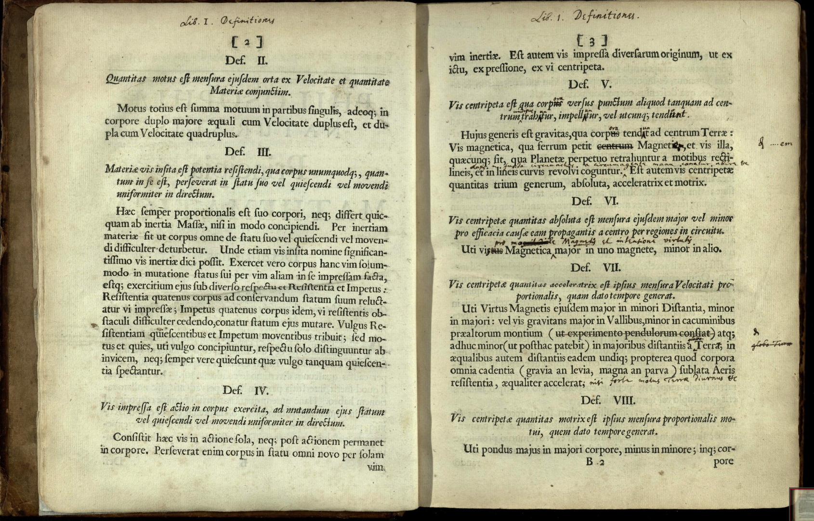
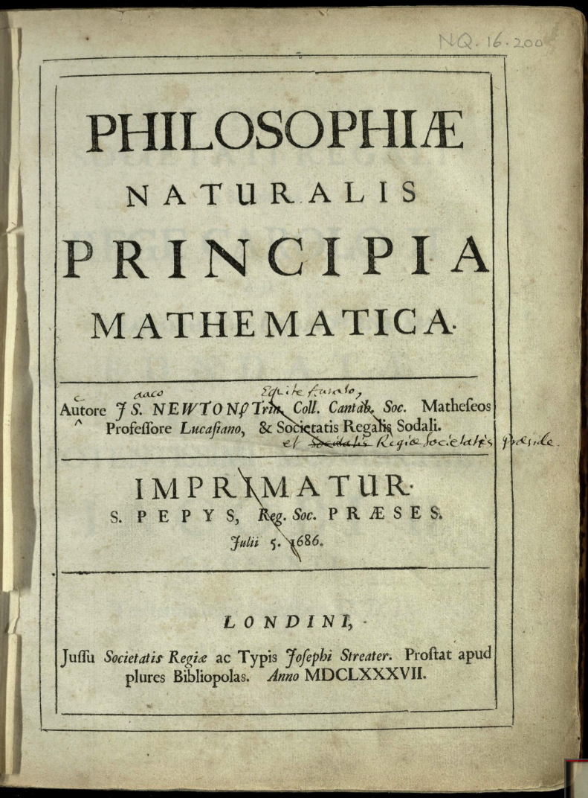
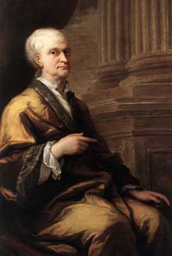
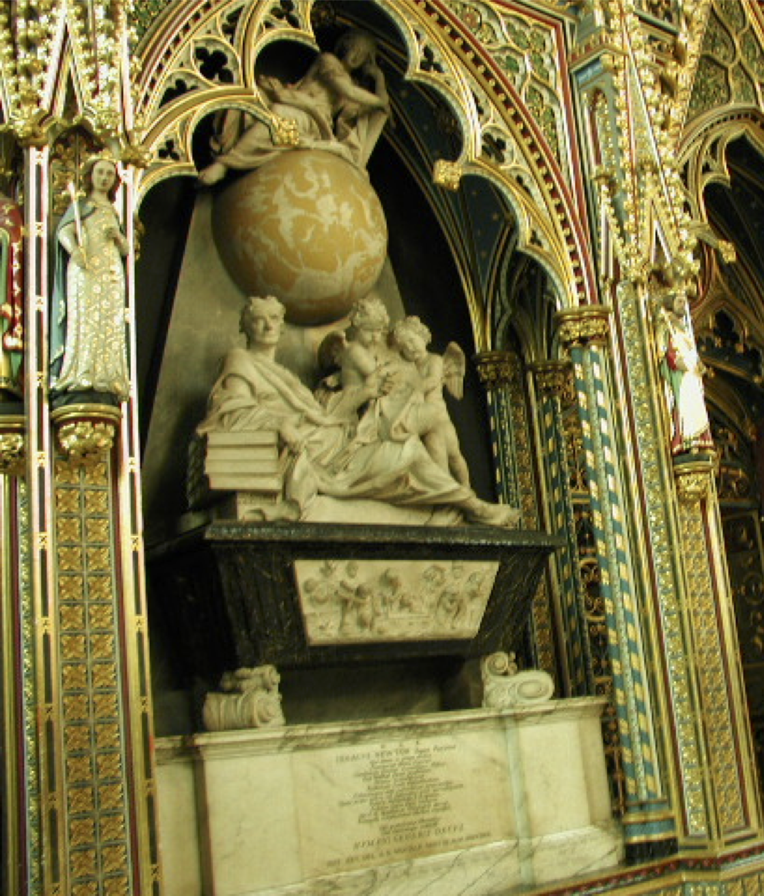
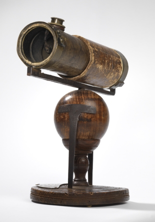
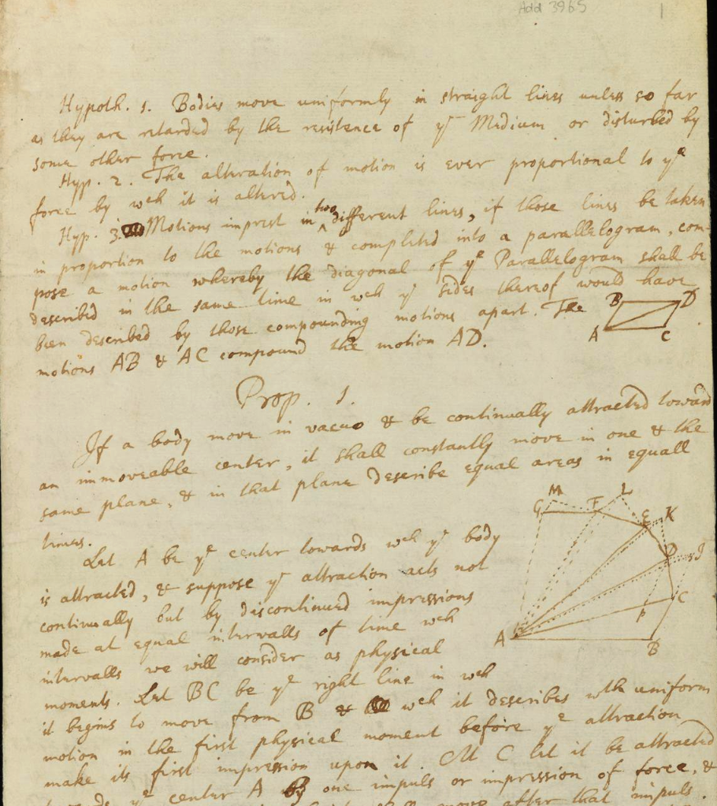

6.1. A Little Bit of Newton#
I’m always saddened when I think of this young man’s childhood. Imagine a 3 year old abandoned by his newly-married mother and forced to live with grandparents who didn’t want him. That’s the beginning of the biggest scientific life of all: Isaac Newton’s. His childhood was a mixture of pain and some accidental fortunate associations. His father was a farmer in Woolsthorpe, not far from Nottingham and a little more than 100 miles north of London. Isaac senior died before tiny, premature Isaac was born. When he was 3 years old, his mother, Hannah—a semi-literate woman for whom the farm and manor was a big job—married the 63 year old Rector of North Witham who wanted nothing to do with a frail toddler who was then left in the care of his maternal grandparents and female cousins. Seven years later, Hannah, a widow yet again, returned with two young children in tow. While she had been away, young Isaac had been sent to school, a privilege that might not have happened had his father been alive. He’d have become a farmer. But a bad one.
{kind=link}

Fig. 6.1 Isaac Newton, circa 1689. 1642-1726#
When he was 12 years old, Isaac was sent to a Free Grammar School in Grantham where the emphasis was Latin (“Grammar,” after all), which was the language of intellectuals and in which he wrote his great works. He lived with the apothecary, another lucky break as that family indulged his precocious abilities with tools and crafts. In what must have been one of the most frivolous activities of not just his adolescence, but his entire odd life, one night he constructed dozens of kites with firecrackers, which he flew over the town at night “…wonderfully affrighting all of the neighboring inhabitants for some time, and causing not a little discourse on market days…”
He was a loner then, and for most of his adult life. “His school fellows generally were not very affectionate toward him. He was commonly too cunning for them in everything. He who has most understanding is least regarded.” When he was 17 years old Hannah tried to turn him into a farmer, but he was a disaster. She gave up and sent him back to Grantham to prepare him for university…as the only outlet for his increasingly apparent, unusual mind.
He was sent to Trinity College at Cambridge University where he was enrolled as a “Sizar,” which was essentially the role of servant to an upperclassman. He was 18 years old, older than most of the students and as a studious person, different from the mostly carefree student body. He made a single friend, a most unlikely event for the difficult Newton. One day he met a fellow lonely student on a park bench. John Wickins and Isaac Newton found commomn interests and became roommates—for 20 years until Wickins married. Wickins was Newton’s assistant as he began his life of changing the world.
{kind=link}

Fig. 6.2 Newtons’s birthplace in Woolsthorpe, about 130 miles from London.#
{kind=link}

Fig. 6.3 Notes in his hand from his day book.#
{kind=link}

Fig. 6.4 Newton’s rooms at Cambridge University, just above the doorway.#
{kind=link}

Fig. 6.5 A page from Principia showing notations.#
{kind=link}

Fig. 6.6 The cover of his Principia with some notations.#
{kind=link}

Fig. 6.7 Portrait of Sir Isaac Newton around 1709 at the age of 67 by the famous British portraitist, James Thornhill.#
{kind=link}

Fig. 6.8 Newton’s tomb in Westminster Abbey.#
The curriculum at Cambridge was reliably old-fashioned: Aristotle, from top to bottom. But René Descartes from the Continent was all the rage and was read and secretly discussed by students. To Descartes, the world was mathematical in a manner beyond what Galileo might have imagined. It was he who blended geometry together with the brand new algebra so that equations could be presented as curves and equivalently, curves as equations. Of course we call our axes, “Cartesian” after their inventor.
Descartes was also a mechanist: meaning he believed that matter’s mechanical interactions caused all motion. Nothing spiritual, nothing occult, nothing random. God originally inserted overall motion into the universe, and apparently then abandoned his creation in order to pursue other interests? In any case, Descartes believed that original motion persisted as the universe formed and that God did not drop in and adjust things. Even the planets moved by being carried by vortices of invisible spheres. His world was predictable according to Laws (yes, capital L for Descartes’s purposes), and he proposed to start with them and draw observable conclusions—deductions. Mechanical modeling was his goal, and analytical mathematics was his tool. Very top-down was Descartes: postulate the principle idea and causes and draw conclusions deductively. Without that original cause, the conclusions can’t happen. Always: the causes of things had to come first.
Descartes was all about Why. Newton weaned us from Why to How.
The young, inquisitive Newton ate Descartes up. Here was an escape from Aristotle and a systematic and mathematical way out—right up Newton’s alley. But Descartes’ conclusions and his method were problematic for Newton and much of what he later wrote was in reaction to this unrequited disagreement.
But the Frenchman’s mathematics stuck and the neo-Platonists at Cambridge carried Descartes’ mathematics program forward. The leader of that movement was Isaac Barrow, the first “Lucasian Professor of Mathematics.” Isaac Newton was the second (Paul Dirac, who we’ll meet later, was 15th and Stephen Hawking was the 17th). Newton became a student of Barrow’s and eventually his beneficiary.
Disaster struck in London 1664 when the Bubonic Plague raged Before it was over, 20% of the population was dead. By 1665 London emptied out (one imagines frightened servant staff remaining behind to protect their masters’ homes while the families fled). Cambridge University closed and the 23 year old Newton went home to Woolsthorpe, where he worked by himself for more than a year. During that period he consumed all mathematics known at the time and went beyond. While at the farm, he essentially invented calculus, had his first ideas about gravity (the famous apple was to have fallen in his presence during this period), and reinvented the science of optics.
What did you do on your summer vacation?
“In the beginning of the year 1665 I found the Method of approximating series & the Rule for reducing any dignity of any Binomial into such a series. The same year in May I found the method of Tangents…, & in November had the direct method of fluxions & the next year in January had the Theory of Colors & in May following I had entrance into the inverse method of fluxions. And the same year I began to think of gravity extending to the orb of the Moon & (having found out how to estimate the force with which a globe revolving within a sphere presses the surface of the sphere) from Kepler’s rule…I deducted that the forces which keep the Planets in their Orbs must be reciprocally as the squares of their distances from the centers about which they revolve: & thereby compared the force requisite to keep the Moon in her Orb with the force of gravity at the surface of the earth, & found them answer pretty nearly. All this was in the two plague years of 1665 & 1666. For in those days, I was in the prime of my age for invention & minded Mathematicks & Philosophy more than at any time since.”
Among Newton’s discoveries during the plague years was that sunlight is composed of all colors, which was in conflict with the standard (Cartesian!) idea that white light was a color of its own and that the colors we see are mixtures of white and dark. He passed light through a prism and found that it spread out into a continuous spectrum of colors. This led him to experiment with light passing through glass and to grinding his own lenses for telescopes. Telescopes had become long and unwieldy and because glass lenses spread out the colors (“chromatic aberration”) precise images were difficult to achieve. Newton changed the design completely, using mirrors rather than lenses. The result was images of higher quality with higher magnification in a compact instrument. His original six-inch “Newtonian reflecting telescope” would magnify 40 times, which would have required a six-foot long conventional telescope resulting in a poorer image to boot. All telescopes today are off-shoots of the Newtonian design.
When he returned to Cambridge his mathematical skills exploded, surpassing those of all around him. In 1667 at the age of 25 he was named a Fellow (like an assistant professor) with a salary. In 1669, Barrow resigned the Lucasian Chair insisting on Newton’s appointment to this highest post in the college. (“Mr. Newton, a fellow of our College, and very young … but of an extraordinary genius and proficiency in these things.”) One of the few duties of the Lucasian Chair was to offer a single course a year, which he dutifully fulfilled, but often lecturing to an empty classroom since nobody could understand him.
{kind=link}

Fig. 6.9 Newton’s orginal conception telescope.#
The reflecting telescope and his explanation constituted his first entry toward membership in the Royal Academy of Sciences. His report on how it worked led to the explication of his theory of light, which the Curator of Experiments, Robert Hooke, thought was stolen from his (incorrect) ideas. They became bitter enemies for life, one of a number of such vicious rivalries that Newton suffered into—and beyond—old age.
So galling was this dispute and the criticism that his theory of colors attracted from all over Europe, that Newton went into nearly complete isolation, vowing to keep the products of his research secret, rather than ever again suffer such public antagonism. He communicated almost exclusively through voluminous correspondence, much of which still exists. Newton didn’t suffer fools well, and even a legitimate dispute would send him into a towering rage, or stony silence. His response to Hooke was to write a book on optics, which he inadvertently destroyed when a fire from an alchemy experiment went out of control. (He rewrote it many years later.)
That’s not all
Newton was an accomplished alchemist, damaging himself with the noxious chemicals that he inhaled and tasted. He had strange ideas about non-scientific things. For example, he believed that God had given first-knowledge of the physical universe to the Ancients (which they suppressed…whoever “they” were), and that among those ideas were alchemical discoveries still to be found. His lodging was near to his laboratory on the Cambridge Trinity College campus and a huge furnace fire was never put out as he single-mindedly attacked alchemy, the precursor to chemistry.
He also was an unusual religious fanatic. He learned Hebrew and translated the Bible from original texts and became convinced that fourth-century changes made the false claim of the divinity of Jesus. So he was a very un-traditional Christian, a believer in a God of Nature, but not the Trinity. He wrote much more about alchemy and his heretical religious research (unrevealed until after his death) than he did about science!
What we recognize as Newton’s enduring scientific work came as the result of a wager, and we’ll pick up that story when we study his law of Gravitation and the first-ever attempt at a scientific cosmology in our lesson on Gravitation. Everything he discovered about mechanics and gravitation is contained in one enormous, ponderously written, thickly Latin, often revised book.
The Book
Newton was in his 40’s when he basically sequestered himself in his rooms, working on his alchemy and intensely strange religious researches. In 1684 three of his colleagues the famous London architect Christopher Wren, the scientist Edmund Halley (of eventual comet-fame), and his arch nemesis Robert Hooke were trying hard to figure out the shape of a planetary orbit if the force of gravity varied like the inverse square of the distance from the Sun. Hooke claimed in his obnoxious way that he knew the answer, but he would not produce a calculation—because he couldn’t: he had no mathematical training. He prospered entirely on his remarkable instincts as an experimenter.
But, a little of Robert Hooke went a long way, and Wren and Halley got tired of listening to him so they deputized Halley to go ask Newton. He showed up unannounced at Newton’s messy room and asked him. Immediately came the recluse’s famous response: “An ellipse.” “Why?” asked Halley. “Because I have calculated it.” But, typical of the paranoid Newton, he’d not told anyone.
He’d worked out the mathematical rules for the motion of the planets and kept it a secret! While Halley waited, Newton searched but could not find his calculation, and Halley left empty-handed. A few days later, Halley received nine pages from Newton that showed: if the force on a planet varies like the inverse square of the distance from the center of the orbit at the Sun, then the orbit’s shape must be a conic (a parabola, ellipse, circle, or hyperbola). And he showed that if the orbit is an ellipse, that the force of attraction must be an inverse-square. This pamphlet became known as, De Motu Corporum in Gyrum (On the Motion of Revolving Bodies). De Motu, as it’s known, was a summary of the first book of his eventually triumphant work. The figure at the side shows a page of De Motu in Newton’s hand that he later prepared for his correspondent-friend, John Locke. This electrified Cambridge and London and set Hooke’s teeth on edge as he’d guessed some of the same conclusions and again insisted that Newton had stolen his ideas.
Halley realized what Newton had done and implored him repeatedly to write it all. Newton finally agreed and went into one of the historically most intense periods of concentration ever embarked on by anyone. For two years he worked night and day, forgetting to eat, wandering around Cambridge without regard to his surroundings. Thousands of pages of manuscript littering his quarters mingled with days’ worth of uneaten food. Two years! Eventually he emerged with the first book of what was to be three volumes of Philosophicæ Naturalis Principia Mathematica, or the Mathematical Principles of Natural Philosophy affectionately known ever after as The “Principia.” It was all there in Latin. His laws of motion and gravitation, but also of fluids and the strengths of materials and his own description of the scientific method. He’d pestered scientists and astronomers from around Britain for data on the planets and the tides.
{kind=link}

Fig. 6.10 A portion of De Motu in Newton’s hand in 1684, written for John Locke who was an early reader of Principia.#
He’d made measurements of motion in his own lab. He let his alchemy furnace go out forever as he worked solely on his “system of the world.” The arguments were mathematical and constituted the first workable model of motion, kinematics and dynamics, and also gravity (later). He continued to hide his calculus, preferring to speak in terms of limits and extrapolations using geometrical constructions, surely backed up by his own private calculus-based calculations. Principia went through three editions after the original 1686 start, often with him revising his last chapter, which was more philosophical, but also with successive furious deletions of the names of rivals.
Halley had persuaded the Royal Society to act as the publisher of Principia and Newton dedicated it so. But the coffers of the Society were dry when it came time to print as they had used up their entire accounts in a lavishly illustrated two volume, History of Fishes.
So Halley took a deep breath and paid for the initial publication himself. This of course led to his active interest in encouraging Newton to push the book off at booksellers and libraries himself. Never was there a more generous gift to science than Halley’s unselfish gesture. And for a book that only a few people in the world could read, but a book that quite possibly initiated the Enlightenment and people’s relationship to our universe.